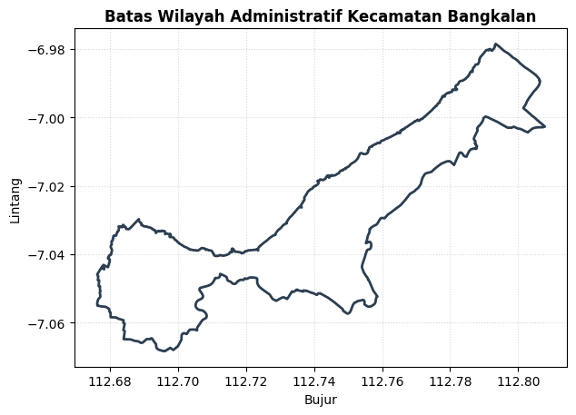
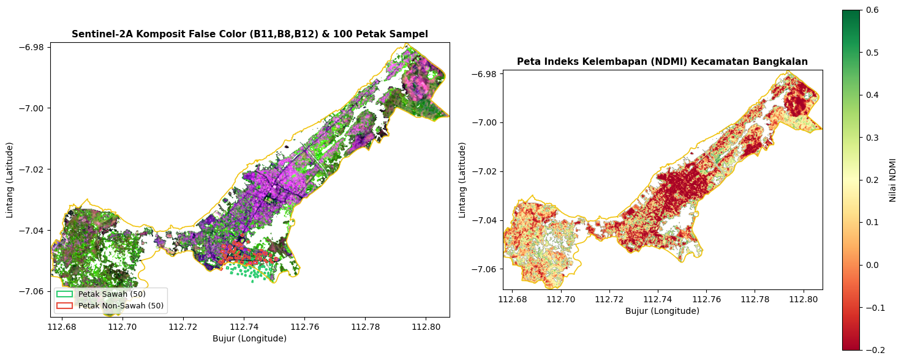
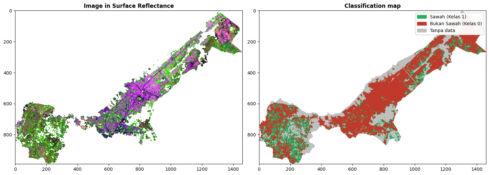

Klasifikasi Tutupan Lahan Sawah Menggunakan Citra Satelit Sentinel-2A dan Algoritma Random Forest — Kecamatan Bangkalan#
Notebook ini mendokumentasikan klasifikasi tutupan lahan (Land Use / Land Cover) menjadi dua kelas (Sawah dan Bukan Sawah) menggunakan citra Sentinel-2A (GeoTIFF) dan algoritma Random Forest. Alur analisis mengikuti contoh notebook Kecamatan Sambeng, sementara batas wilayah, data, dan nama keluarannya disesuaikan untuk Kecamatan Bangkalan.
Komponen Utama#
Batas wilayah kajian: AOI Kecamatan Bangkalan dari GeoJSON atau berkas vektor yang tersedia.
Petak sampel: 50 petak sawah dan 50 petak bukan sawah. Sampel dapat dimuat dari berkas vektor atau dibuat dari koordinat yang sudah diverifikasi.
Ekspor untuk QGIS: Sampel disimpan sebagai GeoJSON dan Shapefile ZIP dengan gaya
.qml.Citra Sentinel-2A: Enam band (B2, B3, B4, B8, B11, B12), indeks spektral, serta pemeriksaan kualitas band.
Ekstraksi fitur: Piksel valid di dalam tiap petak sampel digunakan sebagai data latih.
Random Forest: Pembagian latih/uji dilakukan per petak, dilengkapi validasi silang per petak.
Peta klasifikasi: Hasil disimpan sebagai GeoTIFF, dihitung estimasi luasnya, dan dibandingkan dengan komposit citra.
Peta interaktif: Petak sampel dan batas kecamatan ditampilkan bersama basemap Google Satellite, Esri, dan OpenStreetMap.
Berkas input (letakkan di folder kerja notebook):
Berkas |
Keterangan |
|---|---|
|
Batas Kecamatan Bangkalan |
|
GeoTIFF minimal 6 band: B2, B3, B4, B8, B11, B12 |
|
Satu berkas sampel dengan kolom kelas ( |
|
Alternatif dua berkas terpisah; kelas diberikan otomatis |
Daftar |
Alternatif; gunakan koordinat yang sudah dicek pada citra satelit/QGIS |
Alur Analisis#
Memuat batas wilayah kajian (AOI).
Memuat atau membentuk petak sampel sawah dan bukan sawah.
Mengekspor sampel ke GeoJSON dan Shapefile ZIP untuk QGIS.
Memuat citra Sentinel-2A dan memeriksa kualitas band.
Mengekstrak nilai spektral dari petak sampel.
Melatih dan mengevaluasi model Random Forest.
Mengklasifikasikan seluruh piksel valid di dalam kecamatan.
Menampilkan petak pada peta interaktif.
Menyimpan keluaran dan meninjau hasil di QGIS.
import subprocess, sys
for mod, pkg in [("rasterio","rasterio"),("geopandas","geopandas"),("folium","folium"),("sklearn","scikit-learn")]:
try: __import__(mod)
except ImportError: subprocess.check_call([sys.executable, "-m", "pip", "install", "-q", pkg])
import os, shutil, zipfile, warnings
from pathlib import Path
import numpy as np, pandas as pd, geopandas as gpd, rasterio
import matplotlib.pyplot as plt, matplotlib.patches as mpatches
from matplotlib.colors import ListedColormap
from rasterio import features
from shapely.geometry import Point, box
warnings.filterwarnings("ignore", category=UserWarning)
# ---------------- PENGATURAN ----------------
BASE = Path("/content") if "google.colab" in sys.modules else Path.cwd()
AOI_PATH = BASE / "Kecamatan_Bangkalan-KECAMATAN.geojson"
TIF_PATH = BASE / "sentinel2_bangkalan.tif"
SAMPLE_FILES = [BASE / "sampel_sawah_bangkalan.zip", BASE / "sampel_sawah_bangkalan.geojson"]
PATCH_M = 50 # sisi petak sampel (m)
TEST_SIZE = 0.20 # 80% latih / 20% uji (per petak)
N_TREES = 100
SEED = 42
PAKSA_TIFFFILE = False # True = lewati rasterio, baca TIF dengan tifffile
PAKAI_BAND_TAMPAK = None # None = otomatis (cek kualitas B2,B3,B4); True/False = paksa
OUT = BASE / "hasil_bangkalan"; OUT.mkdir(exist_ok=True)
Langkah 1: Pemuatan Batas Wilayah Kajian (AOI Kecamatan Bangkalan)#
Notebook mencari batas kecamatan dari Kecamatan_Bangkalan-KECAMATAN.geojson terlebih dahulu, lalu mencoba berkas GeoJSON/vektor lain yang namanya menunjukkan AOI atau batas Bangkalan. Batas ini dipakai untuk memotong area citra dan menghitung piksel yang dianalisis.
def cari_aoi():
# pakai AOI_PATH bila ada; kalau tidak, cari berkas batas kecamatan di folder kerja
if AOI_PATH.exists(): return AOI_PATH
kunci, tolak = ("kecamatan", "aoi", "batas", "bangkalan"), ("sawah", "sampel", "klasifikasi", "kandidat")
cands = [p for p in sorted(BASE.iterdir())
if p.is_file() and p.suffix.lower() in (".geojson", ".json", ".shp", ".gpkg", ".zip")
and any(k in p.stem.lower() for k in kunci) and not any(k in p.stem.lower().replace(" ", "") for k in tolak)]
if not cands:
raise FileNotFoundError("Berkas batas kecamatan tidak ditemukan di " + str(BASE) + ". Isi folder: "
+ str(sorted(p.name for p in BASE.iterdir())) + ". Unggah berkasnya atau ubah AOI_PATH di sel pengaturan.")
if len(cands) > 1: print("Beberapa kandidat AOI, dipakai yang pertama:", [p.name for p in cands])
return cands[0]
aoi_file = cari_aoi()
print("Berkas AOI:", aoi_file.name)
gdf_aoi = (gpd.read_file(f"zip://{aoi_file}") if aoi_file.suffix == ".zip" else gpd.read_file(aoi_file)).to_crs(4326)
try: aoi_geom = gdf_aoi.geometry.union_all()
except AttributeError: aoi_geom = gdf_aoi.geometry.unary_union
print("Kolom atribut :", [c for c in gdf_aoi.columns if c != "geometry"])
print("Sistem Koordinat (CRS):", gdf_aoi.crs)
minx, miny, maxx, maxy = gdf_aoi.total_bounds
print(f"Bujur : {minx:.4f} s/d {maxx:.4f}\nLintang: {miny:.4f} s/d {maxy:.4f}")
fig, ax = plt.subplots(figsize=(7, 6))
gdf_aoi.boundary.plot(ax=ax, color="#2c3e50", linewidth=2)
ax.set_title("Batas Wilayah Administratif Kecamatan Bangkalan", fontweight="bold")
ax.set_xlabel("Bujur"); ax.set_ylabel("Lintang"); ax.grid(True, ls=":", alpha=.5)
plt.show()
Berkas AOI: Kecamatan Bangkalan-KECAMATAN.geojson
Kolom atribut : ['kode_kec', 'kode_kk', 'kode_prov', 'kecamatan', 'kab_kota', 'provinsi', 'fid', 'nama', 'label']
Sistem Koordinat (CRS): EPSG:4326
Bujur : 112.6761 s/d 112.8079
Lintang: -7.0683 s/d -6.9786

Langkah 2: Petak Sampel (50 Sawah & 50 Non-Sawah)#
Gunakan 50 petak sawah (kelas 1) dan 50 petak bukan sawah (kelas 0), seperti pada contoh Sambeng. Sampel dibaca dari sampel_sawah_bangkalan.zip/.geojson (kolom class, kelas, atau label), dari pasangan berkas Sawah.zip + Non sawah.zip, atau dari daftar koordinat sawah_coords dan nonsawah_coords di bawah (format (lat, lon, 'keterangan')).
Titik koordinat dibentuk menjadi petak persegi 50 m × 50 m dalam meter (UTM 49S), lalu dikembalikan ke EPSG:4326. Koordinat contoh Kecamatan Sambeng tidak boleh dipakai untuk wilayah Bangkalan.
Penting: koordinat/poligon harus diverifikasi visual di atas Google Satellite/QGIS. Sampel bukan sawah sebaiknya mencakup pemukiman, air/tambak, serta tegalan, kebun, dan lahan bera yang sering tertukar dengan sawah di Madura.
# ====== ISI DI SINI bila tidak memakai berkas sampel ======
sawah_coords = [
# (-7.0xxxx, 112.7xxxx, 'Petak Sawah #01'),
]
nonsawah_coords = [
# (-7.0xxxx, 112.7xxxx, 'Pemukiman'),
# (-7.0xxxx, 112.7xxxx, 'Tegalan/Kebun'),
]
# ==========================================================
def to_class(v):
s = str(v).strip().lower()
if s in ("1", "1.0", "sawah"): return 1
if s in ("0", "0.0", "non-sawah", "nonsawah", "non sawah", "bukan sawah"): return 0
return np.nan
def pts_to_boxes(rows, kelas):
g = gpd.GeoDataFrame(rows, columns=["lat", "lon", "tipe"],
geometry=[Point(r[1], r[0]) for r in rows], crs=4326)
g = g.to_crs(32749)
g["geometry"] = g.geometry.buffer(PATCH_M / 2, cap_style=3)
g = g.to_crs(4326); g["class"] = kelas
return g
def read_vec(p):
p = Path(p)
return gpd.read_file(f"zip://{p}") if p.suffix == ".zip" else gpd.read_file(p)
def find(*names): # cari berkas menurut nama, abaikan huruf besar/kecil, spasi, _ dan -
norm = lambda t: "".join(ch for ch in t.lower() if ch not in " _-")
want = {norm(n) for n in names}
for p in sorted(BASE.iterdir()):
if norm(p.stem) in want and p.suffix.lower() in (".zip", ".geojson", ".shp", ".gpkg"):
return p
return None
def finish(g, kelas_series):
g = g.copy(); g["class"] = kelas_series
g = g[g.geometry.notna() & g["class"].notna()].to_crs(4326)
pt = g.geom_type.isin(["Point", "MultiPoint"])
if pt.any():
gu = g.loc[pt].to_crs(32749); gu["geometry"] = gu.geometry.buffer(PATCH_M / 2, cap_style=3)
g.loc[pt, "geometry"] = gu.to_crs(4326).geometry
tipe = g["tipe"] if "tipe" in g.columns else pd.Series("", index=g.index)
return gpd.GeoDataFrame({"class": g["class"].astype(int), "tipe": tipe.values}, geometry=g.geometry.values, crs=4326)
f_sawah = find("Sawah", "Sawah50", "Petak Sawah")
f_non = find("Non sawah", "Nonsawah", "Nonsawah50", "Bukan sawah", "Non-sawah50")
src_file = next((p for p in SAMPLE_FILES if p.exists()), None)
gdf_samples = None
if src_file is not None: # opsi A: satu berkas dengan kolom kelas
g = read_vec(src_file)
col = next((c for c in g.columns if c.lower() in ("class", "kelas", "label")), None)
if col is not None:
gdf_samples = finish(g, g[col].map(to_class)); print("Sampel dimuat dari:", src_file.name)
elif not (f_sawah and f_non):
raise ValueError(f"{src_file.name} tidak punya kolom kelas (kolom: {list(g.columns)}). "
"Tambahkan kolom 'kelas' (1 = sawah, 0 = non-sawah) di QGIS, atau pisahkan menjadi "
"Sawah.zip dan Non sawah.zip.")
if gdf_samples is None and f_sawah and f_non: # opsi B: dua berkas terpisah
a_, b_ = read_vec(f_sawah), read_vec(f_non)
a_["tipe"] = a_["tipe"] if "tipe" in a_.columns else "Sawah"
b_["tipe"] = b_["tipe"] if "tipe" in b_.columns else "Non-sawah"
ga, gb = finish(a_, pd.Series(1, index=a_.index)), finish(b_, pd.Series(0, index=b_.index))
gdf_samples = gpd.GeoDataFrame(pd.concat([ga, gb], ignore_index=True), crs=4326)
print(f"Sampel dimuat dari: {f_sawah.name} ({len(ga)} petak) + {f_non.name} ({len(gb)} petak)")
if gdf_samples is None: # opsi C: daftar koordinat
if not sawah_coords or not nonsawah_coords:
raise FileNotFoundError("Tidak ada berkas sampel dan daftar koordinat masih kosong. Sediakan salah satu: "
"sampel_sawah_bangkalan.zip (kolom kelas) | Sawah + Non sawah | isi sawah_coords/nonsawah_coords.")
gdf_samples = pd.concat([pts_to_boxes(sawah_coords, 1), pts_to_boxes(nonsawah_coords, 0)], ignore_index=True)
gdf_samples = gpd.GeoDataFrame(gdf_samples[["class", "tipe", "geometry"]], crs=4326)
gdf_samples = gdf_samples.reset_index(drop=True)
gdf_samples["label"] = gdf_samples["class"].map({1: "Sawah", 0: "Bukan Sawah"})
gdf_samples.insert(0, "id", np.arange(1, len(gdf_samples) + 1))
c = gdf_samples.geometry.centroid
gdf_samples["lat"], gdf_samples["lon"] = c.y.round(6), c.x.round(6)
# sampel di luar kecamatan TIDAK dibuang, tetap dipakai untuk melatih
dalam = gdf_samples.intersects(aoi_geom)
print(f"Petak yang menyentuh/di dalam kecamatan: {dalam.sum()} dari {len(gdf_samples)}")
print(gdf_samples.assign(dalam=dalam).groupby(["label", "dalam"]).size())
print("\nTotal petak dipakai untuk latih:", len(gdf_samples))
print(gdf_samples["label"].value_counts().to_string())
if (gdf_samples["class"].value_counts() < 10).any():
print("PERINGATAN: salah satu kelas < 10 petak; evaluasi tidak akan andal.")
gdf_samples.head()
Sampel dimuat dari: Sawah.zip (50 petak) + Non sawah.zip (50 petak)
Petak yang menyentuh/di dalam kecamatan: 73 dari 100
label dalam
Bukan Sawah True 50
Sawah False 27
True 23
dtype: int64
Total petak dipakai untuk latih: 100
label
Sawah 50
Bukan Sawah 50
| id | class | tipe | geometry | label | lat | lon | |
|---|---|---|---|---|---|---|---|
| 0 | 1 | 1 | Sawah | POLYGON ((112.7419 -7.05134, 112.74209 -7.0514... | Sawah | -7.051731 | 112.742003 |
| 1 | 2 | 1 | Sawah | POLYGON ((112.74214 -7.05215, 112.74249 -7.052... | Sawah | -7.052420 | 112.742242 |
| 2 | 3 | 1 | Sawah | POLYGON ((112.74086 -7.05181, 112.7409 -7.0518... | Sawah | -7.051782 | 112.740233 |
| 3 | 4 | 1 | Sawah | POLYGON ((112.74528 -7.052, 112.74549 -7.05213... | Sawah | -7.052207 | 112.745147 |
| 4 | 5 | 1 | Sawah | POLYGON ((112.74683 -7.05176, 112.74693 -7.052... | Sawah | -7.051924 | 112.746611 |
Langkah 3: Ekspor Petak Sampel ke GeoJSON & Shapefile ZIP (QGIS Ready)#
Sampel diekspor ke folder hasil_bangkalan/. Paket Shapefile menyertakan .qml agar QGIS dapat menampilkan kelas Sawah dengan warna hijau dan Bukan Sawah dengan warna merah.
cols = ["id", "class", "label", "tipe", "geometry"]
gdf_samples[cols].to_file(OUT / "sampel_sawah_bangkalan.geojson", driver="GeoJSON")
shp_dir = OUT / "temp_shp"; shp_dir.mkdir(exist_ok=True)
nm = "sampel_sawah_bangkalan"
gdf_samples[cols].to_file(shp_dir / f"{nm}.shp")
qml = '''<!DOCTYPE qgis PUBLIC 'http://mrcc.com/qgis.dtd' 'SYSTEM'>
<qgis version='3.28.0' styleCategories='AllStyleCategories'>
<renderer-v2 type='categorizedSymbol' attr='label'>
<categories>
<category value='Sawah' label='Sawah (Kelas 1)' symbol='0' render='true'/>
<category value='Bukan Sawah' label='Bukan Sawah (Kelas 0)' symbol='1' render='true'/>
</categories>
<symbols>
<symbol type='fill' name='0'><layer class='SimpleFill'><prop k='color' v='46,204,113,180'/><prop k='outline_color' v='39,174,96,255'/><prop k='outline_width' v='0.8'/></layer></symbol>
<symbol type='fill' name='1'><layer class='SimpleFill'><prop k='color' v='231,76,60,180'/><prop k='outline_color' v='192,57,43,255'/><prop k='outline_width' v='0.8'/></layer></symbol>
</symbols>
</renderer-v2>
<labeling type='simple'><settings calloutType='simple'>
<text-style fieldName='label' fontSize='10' textColor='0,0,0,255'><text-buffer bufferSize='1' bufferColor='255,255,255,255' bufferDraw='1'/></text-style>
</settings></labeling>
</qgis>'''
(shp_dir / f"{nm}.qml").write_text(qml, encoding="utf-8")
zip_path = OUT / f"{nm}.zip"
with zipfile.ZipFile(zip_path, "w", zipfile.ZIP_DEFLATED) as z:
for ext in [".shp", ".shx", ".dbf", ".prj", ".cpg", ".qml"]:
f = shp_dir / f"{nm}{ext}"
if f.exists(): z.write(f, f.name)
print("GeoJSON :", OUT / "sampel_sawah_bangkalan.geojson")
print("ZIP :", zip_path, "->", zipfile.ZipFile(zip_path).namelist())
GeoJSON : /content/hasil_bangkalan/sampel_sawah_bangkalan.geojson
ZIP : /content/hasil_bangkalan/sampel_sawah_bangkalan.zip -> ['sampel_sawah_bangkalan.shp', 'sampel_sawah_bangkalan.shx', 'sampel_sawah_bangkalan.dbf', 'sampel_sawah_bangkalan.prj', 'sampel_sawah_bangkalan.cpg', 'sampel_sawah_bangkalan.qml']
Langkah 4: Pemuatan Citra Sentinel-2A GeoTIFF dan Pemeriksaan Kualitas Band#
Band 1–6 pada berkas yang digunakan di notebook ini harus berurutan sebagai B2 (Blue), B3 (Green), B4 (Red), B8 (NIR), B11 (SWIR1), dan B12 (SWIR2). Band B11/B12 memiliki resolusi asli yang berbeda dari band 10 m; pastikan GeoTIFF sudah disejajarkan/resampling saat diekspor.
Nilai DN hingga 10000 dikonversi ke reflektansi dengan membagi 10000. Sebelum analisis, notebook memeriksa persentase piksel bernilai lebih dari 0 pada tiap band. Jika B2/B3/B4 hampir seluruhnya 0 (misalnya akibat offset reflektansi terpotong dua kali), fitur indeks tampak tidak dapat dipercaya; notebook memberi peringatan dan beralih ke fitur SWIR/NIR bila mode otomatis digunakan.
def baca_tif(path):
# baca dengan rasterio; bila gagal (mis. versi GDAL di Colab bermasalah) pakai tifffile
if not PAKSA_TIFFFILE:
try:
with rasterio.open(path) as src:
return src.read().astype("float32"), src.crs, src.transform, src.profile
except Exception as e:
print("rasterio gagal membuka TIF:", str(e)[:100], "| beralih ke tifffile")
try: import tifffile, imagecodecs
except ImportError:
subprocess.check_call([sys.executable, "-m", "pip", "install", "-q", "tifffile", "imagecodecs"])
import tifffile
from rasterio.crs import CRS
from affine import Affine
with tifffile.TiffFile(path) as tf:
pg = tf.pages[0]; arr = pg.asarray()
sc, tp, gk = (pg.tags[k].value for k in ("ModelPixelScaleTag", "ModelTiepointTag", "GeoKeyDirectoryTag"))
stack = (np.moveaxis(arr, -1, 0) if arr.ndim == 3 else arr[None]).astype("float32")
epsg = next(gk[i + 3] for i in range(4, len(gk), 4) if gk[i] == 3072)
crs, transform = CRS.from_epsg(epsg), Affine(sc[0], 0, tp[3], 0, -sc[1], tp[4])
prof = dict(driver="GTiff", height=stack.shape[1], width=stack.shape[2], crs=crs,
transform=transform, count=stack.shape[0], dtype="float32")
return stack, crs, transform, prof
print("Ukuran berkas:", f"{TIF_PATH.stat().st_size:,} byte")
stack, crs, transform, prof = baca_tif(TIF_PATH)
H, W = stack.shape[1:]
assert stack.shape[0] >= 6, f"TIF hanya {stack.shape[0]} band; dibutuhkan 6 (B2,B3,B4,B8,B11,B12)."
stack = stack[:6]
if np.nanmax(stack) > 2: stack /= 10000.0 # DN -> reflektansi
names = ["B2", "B3", "B4", "B8", "B11", "B12"]
B = dict(zip(names, stack))
print(f"Dimensi: {W} x {H} piksel | CRS: {crs} | piksel {abs(transform.a):.0f} m")
aoi_proj = gdf_aoi.to_crs(crs)
inside = features.rasterize([(g, 1) for g in aoi_proj.geometry], out_shape=(H, W),
transform=transform, fill=0, dtype="uint8").astype(bool)
land = inside & np.isfinite(B["B8"]) & (B["B8"] > 0)
print(f"Piksel daratan di dalam kecamatan: {land.sum():,}\n")
q = pd.DataFrame({"band": names,
"% piksel > 0": [100 * float((B[n][land] > 0).mean()) for n in names],
"median": [float(np.nanmedian(B[n][land])) for n in names]}).round(3)
print(q.to_string(index=False))
bad_vis = [n for n in ["B2", "B3", "B4"] if q.set_index("band").loc[n, "% piksel > 0"] < 90]
USE_VIS = (not bad_vis) if PAKAI_BAND_TAMPAK is None else bool(PAKAI_BAND_TAMPAK)
if bad_vis:
print(f"\nPERINGATAN: {bad_vis} sebagian besar bernilai 0 di dalam kecamatan.")
print("Mode fitur:", "B2,B3,B4,B8,B11,B12 + NDVI, NDWI, NDMI" if USE_VIS
else "SWIR/NIR saja (B8, B11, B12 + NDMI, NBR2). Ekspor ulang citra dari GEE untuk mode penuh.")
Ukuran berkas: 13,969,493 byte
Dimensi: 2126 x 2000 piksel | CRS: EPSG:32749 | piksel 10 m
Piksel daratan di dalam kecamatan: 349,332
band % piksel > 0 median
B2 11.935 0.000
B3 27.804 0.000
B4 33.971 0.000
B8 100.000 0.170
B11 95.960 0.131
B12 75.717 0.043
PERINGATAN: ['B2', 'B3', 'B4'] sebagian besar bernilai 0 di dalam kecamatan.
Mode fitur: SWIR/NIR saja (B8, B11, B12 + NDMI, NBR2). Ekspor ulang citra dari GEE untuk mode penuh.
nd = lambda a, b: (a - b) / (a + b + 1e-10)
if USE_VIS:
FEATURE_NAMES = ["band_blue", "band_green", "band_red", "band_nir", "band_swir1", "band_swir2", "ndvi", "ndwi", "ndmi"]
feats = np.stack([B["B2"], B["B3"], B["B4"], B["B8"], B["B11"], B["B12"],
nd(B["B8"], B["B4"]), nd(B["B3"], B["B8"]), nd(B["B8"], B["B11"])]).astype("float32")
used = ["B2", "B3", "B4", "B8", "B11", "B12"]
else:
FEATURE_NAMES = ["band_nir", "band_swir1", "band_swir2", "ndmi", "nbr2"]
feats = np.stack([B["B8"], B["B11"], B["B12"], nd(B["B8"], B["B11"]), nd(B["B11"], B["B12"])]).astype("float32")
used = ["B8", "B11", "B12"]
valid = inside & np.isfinite(feats).all(axis=0) & np.all([B[n] > 0 for n in used], axis=0)
feats[:, ~valid] = np.nan
print(f"Piksel valid untuk analisis: {valid.sum():,} dari {inside.sum():,} piksel di dalam kecamatan "
f"({valid.sum()/inside.sum():.1%})")
# ---------- visualisasi gaya contoh Sambeng (dipotong pas ke kecamatan) ----------
from rasterio.warp import transform as rio_transform
x0_, y0_, x1_, y1_ = aoi_proj.total_bounds
c0, c1 = max(int((x0_ - transform.c) / transform.a), 0), min(int(np.ceil((x1_ - transform.c) / transform.a)), W)
r0, r1 = max(int((transform.f - y1_) / -transform.e), 0), min(int(np.ceil((transform.f - y0_) / -transform.e)), H)
crop = (slice(r0, r1), slice(c0, c1))
lon, lat = rio_transform(crs, "EPSG:4326", [transform.c + c0 * transform.a, transform.c + c1 * transform.a],
[transform.f + r1 * transform.e, transform.f + r0 * transform.e])
ext_ll = [lon[0], lon[1], lat[0], lat[1]] # [barat, timur, selatan, utara]
vc = valid[crop]
def stretch(a):
lo, hi = np.nanpercentile(a[vc], [2, 98]); return np.clip((a - lo) / (hi - lo + 1e-10), 0, 1)
def komposit(b3): # putih = di luar kecamatan / tanpa data
img = np.dstack([stretch(B[n][crop]) for n in b3]); img[~vc] = 1.0; return img
BAND_TC = ("B4", "B3", "B2") if USE_VIS else ("B11", "B8", "B12") # Langkah 4
BAND_AGRI = ("B4", "B8", "B2") if USE_VIS else ("B11", "B8", "B12") # Langkah 7 (komposit pertanian)
ttl = "Sentinel-2A True Color (RGB)" if USE_VIS else "Sentinel-2A Komposit False Color (B11,B8,B12)"
idx_img, idx_name = (feats[6], "NDVI") if USE_VIS else (feats[3], "NDMI")
n1, n0 = int((gdf_samples["class"] == 1).sum()), int((gdf_samples["class"] == 0).sum())
fig, axes = plt.subplots(1, 2, figsize=(15, 6))
axes[0].imshow(komposit(BAND_TC), extent=ext_ll)
gdf_samples[gdf_samples["class"] == 1].plot(ax=axes[0], facecolor="none", edgecolor="#2ecc71", linewidth=1.5)
gdf_samples[gdf_samples["class"] == 0].plot(ax=axes[0], facecolor="none", edgecolor="#e74c3c", linewidth=1.5)
gdf_aoi.boundary.plot(ax=axes[0], color="#f1c40f", linewidth=1.2)
axes[0].set_title(ttl + f" & {n1 + n0} Petak Sampel", fontsize=11, fontweight="bold")
axes[0].legend(handles=[mpatches.Patch(edgecolor="#2ecc71", facecolor="none", linewidth=1.5, label=f"Petak Sawah ({n1})"),
mpatches.Patch(edgecolor="#e74c3c", facecolor="none", linewidth=1.5, label=f"Petak Non-Sawah ({n0})")],
loc="lower left", fontsize=9)
im = axes[1].imshow(np.where(vc, idx_img[crop], np.nan), cmap="RdYlGn", vmin=-0.2, vmax=0.9 if USE_VIS else 0.6, extent=ext_ll)
gdf_aoi.boundary.plot(ax=axes[1], color="#f1c40f", linewidth=1.2)
axes[1].set_title(f"Peta Indeks {'Kehijauan (NDVI)' if USE_VIS else 'Kelembapan (NDMI)'} Kecamatan Bangkalan", fontsize=11, fontweight="bold")
plt.colorbar(im, ax=axes[1], label=f"Nilai {idx_name}")
for a in axes:
a.set_xlim(ext_ll[0], ext_ll[1]); a.set_ylim(ext_ll[2], ext_ll[3])
a.set_xlabel("Bujur (Longitude)"); a.set_ylabel("Lintang (Latitude)")
plt.tight_layout(); plt.show()
Piksel valid untuk analisis: 264,505 dari 360,917 piksel di dalam kecamatan (73.3%)

Langkah 5: Ekstraksi Nilai Spektral per Petak (extract)#
Mengikuti tujuan fungsi extract() pada alur contoh, fitur spektral diekstrak dari piksel valid di dalam tiap poligon sampel (bukan hanya satu titik pusat). Bergantung pada kualitas band, fitur mencakup band Blue/Green/Red/NIR/SWIR serta indeks NDVI, NDWI, NDMI, atau NBR2. Setiap petak memiliki id unik dan menjadi satu grup untuk pembagian data latih/uji.
sp = gdf_samples.to_crs(crs)
poly_ras = features.rasterize([(g, int(i)) for g, i in zip(sp.geometry, sp["id"])], out_shape=(H, W),
transform=transform, fill=0, dtype="int32")
lab_mask = (poly_ras > 0) & valid
X = feats[:, lab_mask].T
groups = poly_ras[lab_mask]
cls_of = dict(zip(gdf_samples["id"], gdf_samples["class"]))
lab_lut = np.zeros(int(poly_ras.max()) + 1, dtype="uint8")
for i, k in cls_of.items(): lab_lut[i] = k
y = lab_lut[groups]
present = np.unique(groups)
df_features = pd.DataFrame(X, columns=FEATURE_NAMES)
df_features["id"], df_features["class"] = groups, y
df_features["label"] = np.where(y == 1, "Sawah", "Bukan Sawah")
print(f"Petak terpakai: {len(present)} dari {len(gdf_samples)} | piksel: {len(y)}")
print(df_features.groupby("label").agg(petak=("id", "nunique"), piksel=("id", "size")).to_string())
if len(present) < len(gdf_samples):
print("PERINGATAN: sebagian petak tidak punya piksel valid (di luar citra / tanpa data).")
print("\nRata-rata respon spektral per kelas:")
print(df_features.groupby("label")[FEATURE_NAMES].mean().round(3).T)
Petak terpakai: 64 dari 100 | piksel: 2871
petak piksel
label
Bukan Sawah 50 2640
Sawah 14 231
PERINGATAN: sebagian petak tidak punya piksel valid (di luar citra / tanpa data).
Rata-rata respon spektral per kelas:
label Bukan Sawah Sawah
band_nir 0.119 0.181
band_swir1 0.168 0.111
band_swir2 0.136 0.024
ndmi -0.180 0.236
nbr2 0.140 0.705
Langkah 6: Pelatihan & Evaluasi Random Forest#
Model Random Forest menggunakan fitur spektral hasil ekstraksi. Evaluasi mengikuti pembagian 80% latih / 20% uji per petak; seluruh piksel dari petak yang sama hanya masuk ke salah satu bagian, sehingga mengurangi kebocoran data spasial.
Hasil evaluasi mencakup Overall Accuracy, Cohen’s Kappa, Confusion Matrix, laporan presisi/recall/F1, dan Feature Importance. class_weight="balanced" membantu menangani jumlah piksel yang tidak seimbang. Validasi silang per petak memberi gambaran tambahan selain satu pembagian latih/uji.
from sklearn.ensemble import RandomForestClassifier
from sklearn.model_selection import GroupKFold
from sklearn.metrics import accuracy_score, cohen_kappa_score, confusion_matrix, classification_report
rng = np.random.default_rng(SEED)
test_ids = []
for k in (0, 1):
ids = [p for p in present if cls_of[p] == k]; rng.shuffle(ids)
test_ids += ids[:max(1, int(round(len(ids) * TEST_SIZE)))]
m_te = np.isin(groups, test_ids)
X_tr, y_tr, X_te, y_te = X[~m_te], y[~m_te], X[m_te], y[m_te]
print(f"Petak latih: {len(present)-len(test_ids)} | uji: {len(test_ids)} || piksel latih: {len(y_tr)} | uji: {len(y_te)}")
rf_model = RandomForestClassifier(n_estimators=N_TREES, class_weight="balanced", random_state=SEED, n_jobs=-1).fit(X_tr, y_tr)
y_pred = rf_model.predict(X_te)
cm = confusion_matrix(y_te, y_pred, labels=[0, 1])
df_conf = pd.DataFrame(cm, index=["Aktual: Non-Sawah", "Aktual: Sawah"], columns=["Prediksi: Non-Sawah", "Prediksi: Sawah"])
print("=" * 60, "\nHASIL EVALUASI RANDOM FOREST (SAWAH vs NON-SAWAH)\n" + "=" * 60)
print(f"Overall Accuracy : {accuracy_score(y_te, y_pred)*100:.2f}%")
print(f"Kappa Index : {cohen_kappa_score(y_te, y_pred):.4f}\n")
print(df_conf, "\n")
print(classification_report(y_te, y_pred, labels=[0, 1], target_names=["Non-Sawah", "Sawah"], zero_division=0))
df_conf.to_csv(OUT / "confusion_matrix_sawah.csv", sep=";")
oa, kp = [], []
for tr, te in GroupKFold(n_splits=min(5, len(present))).split(X, y, groups):
m = RandomForestClassifier(n_estimators=N_TREES, class_weight="balanced", random_state=SEED, n_jobs=-1).fit(X[tr], y[tr])
p = m.predict(X[te]); oa.append(accuracy_score(y[te], p)); kp.append(cohen_kappa_score(y[te], p))
print(f"Validasi silang per petak: OA = {np.mean(oa)*100:.1f}% ± {np.std(oa)*100:.1f} | Kappa = {np.mean(kp):.3f} ± {np.std(kp):.3f}")
print("\nTingkat Kepentingan Fitur:")
print(pd.DataFrame({"Fitur": FEATURE_NAMES, "Tingkat Kepentingan": rf_model.feature_importances_})
.sort_values("Tingkat Kepentingan", ascending=False).round(4).to_string(index=False))
Petak latih: 51 | uji: 13 || piksel latih: 2325 | uji: 546
============================================================
HASIL EVALUASI RANDOM FOREST (SAWAH vs NON-SAWAH)
============================================================
Overall Accuracy : 96.52%
Kappa Index : 0.7767
Prediksi: Non-Sawah Prediksi: Sawah
Aktual: Non-Sawah 490 9
Aktual: Sawah 10 37
precision recall f1-score support
Non-Sawah 0.98 0.98 0.98 499
Sawah 0.80 0.79 0.80 47
accuracy 0.97 546
macro avg 0.89 0.88 0.89 546
weighted avg 0.96 0.97 0.97 546
Validasi silang per petak: OA = 96.5% ± 2.3 | Kappa = 0.675 ± 0.180
Tingkat Kepentingan Fitur:
Fitur Tingkat Kepentingan
nbr2 0.4236
band_swir2 0.2457
ndmi 0.2063
band_swir1 0.0736
band_nir 0.0508
Langkah 7: Klasifikasi Seluruh Kecamatan & Peta Berdampingan#
Model akhir dilatih ulang dengan seluruh data petak, lalu diterapkan bertahap ke piksel valid di dalam Kecamatan Bangkalan. Hasil disimpan sebagai hasil_bangkalan/klasifikasi_sawah_bangkalan.tif untuk dibuka di QGIS; nilai 255 menandai area di luar AOI atau piksel tanpa data. Peta hasil ditampilkan berdampingan dengan komposit citra, dan luas kelas dihitung dari ukuran piksel GeoTIFF.
rf_final = RandomForestClassifier(n_estimators=N_TREES, class_weight="balanced", random_state=SEED, n_jobs=-1).fit(X, y)
nf = feats.shape[0]; flat = feats.reshape(nf, -1)
idx = np.flatnonzero(valid.ravel())
pred = np.full(H * W, 255, dtype="uint8")
for s in range(0, len(idx), 1_000_000):
j = idx[s:s + 1_000_000]
pred[j] = rf_final.predict(flat[:, j].T).astype("uint8")
classification_map = pred.reshape(H, W)
out_tif = OUT / "klasifikasi_sawah_bangkalan.tif"
prof.update(driver="GTiff", dtype="uint8", count=1, nodata=255, compress="lzw")
with rasterio.open(out_tif, "w", **prof) as dst:
dst.write(classification_map, 1)
dst.set_band_description(1, "kelas (1=sawah, 0=non-sawah)")
dst.write_colormap(1, {0: (215, 25, 28, 255), 1: (26, 150, 65, 255), 255: (0, 0, 0, 0)})
print("GeoTIFF:", out_tif)
n_s, n_n = int((classification_map == 1).sum()), int((classification_map == 0).sum())
ha = abs(transform.a * transform.e) / 10000
print(f"Sawah : {n_s:,} piksel = {n_s*ha:,.1f} ha ({n_s/(n_s+n_n):.1%})")
print(f"Non-Sawah : {n_n:,} piksel = {n_n*ha:,.1f} ha ({n_n/(n_s+n_n):.1%})")
print(f"Tanpa data di dalam kecamatan: {(inside & ~valid).sum()*ha:,.1f} ha")
# ---------- peta berdampingan gaya contoh Sambeng ----------
from matplotlib.colors import to_rgb
cm_c = classification_map[crop]
kelas_rgb = np.ones(cm_c.shape + (3,)) # putih = di luar kecamatan
kelas_rgb[inside[crop] & ~vc] = (0.75, 0.75, 0.75) # abu-abu = di dalam kecamatan tapi tanpa data
kelas_rgb[cm_c == 1] = to_rgb("#27ae60")
kelas_rgb[cm_c == 0] = to_rgb("#c0392b")
fig, axes = plt.subplots(1, 2, figsize=(15, 6))
axes[0].imshow(komposit(BAND_AGRI))
axes[0].set_title("Image in Surface Reflectance", fontsize=12, fontweight="bold"); axes[0].grid(False)
axes[1].imshow(kelas_rgb)
axes[1].set_title("Classification map", fontsize=12, fontweight="bold"); axes[1].grid(False)
axes[1].legend(handles=[mpatches.Patch(color="#27ae60", label="Sawah (Kelas 1)"),
mpatches.Patch(color="#c0392b", label="Bukan Sawah (Kelas 0)"),
mpatches.Patch(color="#bfbfbf", label="Tanpa data")], loc="upper right", framealpha=0.95)
plt.tight_layout(); plt.savefig(OUT / "peta_klasifikasi_bangkalan.png", dpi=150); plt.show()
GeoTIFF: /content/hasil_bangkalan/klasifikasi_sawah_bangkalan.tif
Sawah : 64,713 piksel = 647.1 ha (24.5%)
Non-Sawah : 199,792 piksel = 1,997.9 ha (75.5%)
Tanpa data di dalam kecamatan: 964.1 ha

Langkah 8: Peta Interaktif (Google Satellite, Esri, OpenStreetMap)#
Peta Folium menampilkan batas Kecamatan Bangkalan dan poligon sampel dengan popup kelas, tipe, serta koordinat. Gunakan kontrol lapisan untuk membandingkan Google Satellite Hybrid, Google Satellite, Esri World Imagery, dan OpenStreetMap. Berkas HTML mandiri disimpan di hasil_bangkalan/peta_sampel_bangkalan.html.
import folium
m = folium.Map(location=[(miny + maxy) / 2, (minx + maxx) / 2], zoom_start=13, tiles=None)
for nm_, url, att in [("Google Satellite (Hybrid)", "https://mt1.google.com/vt/lyrs=y&x={x}&y={y}&z={z}", "Google"),
("Google Satellite", "https://mt1.google.com/vt/lyrs=s&x={x}&y={y}&z={z}", "Google"),
("Esri World Imagery", "https://server.arcgisonline.com/ArcGIS/rest/services/World_Imagery/MapServer/tile/{z}/{y}/{x}", "Esri")]:
folium.TileLayer(tiles=url, attr=att, name=nm_, overlay=False).add_to(m)
folium.TileLayer("OpenStreetMap", name="OpenStreetMap", overlay=False).add_to(m)
folium.GeoJson(gdf_aoi.to_json(), name="Batas Kecamatan Bangkalan",
style_function=lambda x: {"fillColor": "none", "color": "#f1c40f", "weight": 3, "dashArray": "6,6"}).add_to(m)
for k, nm_, col in ((1, "Sawah", "#27ae60"), (0, "Bukan Sawah", "#c0392b")):
fg = folium.FeatureGroup(name=f"{nm_} ({(gdf_samples['class'] == k).sum()})")
for _, r in gdf_samples[gdf_samples["class"] == k].iterrows():
folium.GeoJson(r.geometry, style_function=lambda x, c=col: {"color": c, "fillColor": c, "weight": 2, "fillOpacity": .6},
popup=folium.Popup(f"<b>ID:</b> {r['id']}<br><b>Kelas:</b> {nm_}<br><b>Tipe:</b> {r['tipe']}<br>{r['lat']:.5f}, {r['lon']:.5f}", max_width=250),
tooltip=f"#{r['id']} {nm_}").add_to(fg)
fg.add_to(m)
folium.LayerControl(collapsed=False).add_to(m)
m.save(OUT / "peta_sampel_bangkalan.html")
print("Peta interaktif:", OUT / "peta_sampel_bangkalan.html")
m
Peta interaktif: /content/hasil_bangkalan/peta_sampel_bangkalan.html
Langkah 9: Kesimpulan & Panduan Buka di QGIS#
Keluaran (folder hasil_bangkalan/): klasifikasi_sawah_bangkalan.tif, sampel_sawah_bangkalan.zip (+ .qml), sampel_sawah_bangkalan.geojson, peta_klasifikasi_bangkalan.png, peta_sampel_bangkalan.html, dan confusion_matrix_sawah.csv.
Membuka hasil di QGIS#
Ekstrak
sampel_sawah_bangkalan.zip, lalu tambahkansampel_sawah_bangkalan.shp. Berkas.qmldi dalam paket mengatur warna kelas secara otomatis.Tambahkan basemap melalui Browser → XYZ Tiles → New Connection, gunakan URL
https://mt1.google.com/vt/lyrs=y&x={x}&y={y}&z={z}, lalu letakkan basemap di bawah layer sampel.Tambahkan
klasifikasi_sawah_bangkalan.tif: kelas 0 adalah bukan sawah (merah), kelas 1 adalah sawah (hijau), dan 255 adalah tanpa data.
Catatan interpretasi#
Kualitas peta dan metrik evaluasi bergantung pada ketepatan label serta sebaran sampel. Pastikan kelas bukan sawah mencakup tegalan, kebun, lahan bera, dan tambak.
Jika band B2/B3/B4 bermasalah, hasil menggunakan fitur SWIR/NIR saja. Periksa kembali ekspor citra dari GEE, terutama proses scaling/offset.
Citra satu tanggal tidak menangkap seluruh fase tanam; komposit median multi-tanggal dapat memberi gambaran sawah yang lebih stabil.